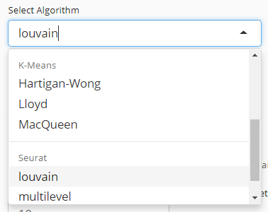
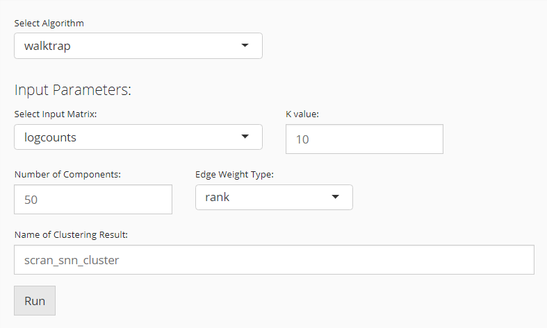

Introduction
This section describes the usage of the user interface (UI) for singleCellTK (SCTK) clustering workflow. The underneath process is wrapped by R function for clustering, including runScranSNN(), runKMeans() and seuratFindClusters(). For the help of R console workflow, also refer to the help page for R console.
UI Layout
Entry of The Panel
From anywhere of the UI, the panel for clustering can be accessed from the top navigation panel at the circled tab shown below.

The UI is includes two panels. The top one is for setting the parameters and run the clustering, while the bottom one is for visualizing the results.
Run Clustering
Choose An Algorithm

User will choose an algorithm to run the clustering at the very first step. The slide-down option list is constructed in a grouped style. Each group lists all the algorithm that a dependency (shown with grey text) supports. By selecting an algorithm that belongs to different groups, the parameter settings will change.
Parameter Settings
Scran SNN

When the selected algorithm belongs to “Scran SNN” group, the parameter settings will look like the figure above. For the choices in the algorithm list, please refer to igraph::cluster_walktrap(), igraph::cluster_louvain(), igraph::cluster_infomap(), igraph::cluster_fast_greedy(), igraph::cluster_label_prop(), and igraph::cluster_leading_eigen().
- Data matrix selection - selection input “Select Input Matrix”. Scran SNN method allows various type of data matrix. Either A full-sized or subsetted expression matrix, technically called
assayoraltExp, respectively, or a dimension reduction, technicallyreducedDim, is allowed. - Resolution setting - numeric input “K value”.
Kis an integer scalar specifying the number of nearest neighbors to consider during graph construction. Considering more neighbors results in larger groups. (See parameterkofscran::buildSNNGraph()) - Algorithm detail setting - selection input “Edge Weight Type”. User can specify the type of weighting scheme to use for shared neighbors. (See parameter
typeofscran::buildSNNGraph()) - Component number setting (Only used when the chosen data matrix is an
assayoraltExp) - numeric input “Number of Components”. When anassayoraltExpis chosen, the algorithm will perform a PCA on the matrix and obtain the top principal components (PCs) for downstream use. Thus users will specify the number of PCs here.
K-Means

When the selected algorithm belongs to “K-Means” group, the parameter settings will look like the figure above.
- Data matrix selection - selection input “Select a ReducedDim”. Here the data matrix allowed can only be a dimension reduction, technically called
reducedDim. Should be obtained in advance from “Feature Selection & Dimension Reduction” tab. - Cluster number determining - numeric input “Number of Centers (Clusters)”. User will decide the exact number of clusters here. In term of K-means algorithm, the number of cluster centroids.
- Iteration limit setting - numeric input “Max Number of Iterations”. User will here decide the maximum number of iterations to run.
- Algorithm detail setting - numeric input “Number of Random Sets”. Kmeans attempts multiple initial configurations and reports on the best one. Here users will set the number of initial configurations to use.
Seurat

When the selected algorithm belongs to “Seurat” group, the parameter settings will look like the figure above.
- Data matrix selection - selection input “Select a ReducedDim”. Here the data matrix allowed can only be a dimension reduction, technically called
reducedDim. Should be obtained in advance from “Feature Selection & Dimension Reduction” tab. - Component number setting - numeric input “How Many Dimensions to Use”.
- Algorithm detail setting - checkbox input “Group Singletons”.
- Resolution setting - numeric input “Resolution”.
Visualization

The visualization is implemented with a plotting of a chosen dimension reduction, colored with a chosen cluster assignment.
- Cluster annotation selection. radio button selection “Select from Current Results” and “Select from All Present Annotation”. And a selection input follows. Only a successful run of clustering in the current SCTK session adds an option for the new result to “Select from Current Results”, while all the cell annotation stored in background (i.e.
colData(sce)) are accessible if “Select from All Present Annotation” is chosen. - Dimension Reduction selection - selection input “Use Reduction”. User have to choose a reduction here for plotting. If there is not yet any option, user can obtain one from “Feature Selection & Dimension Reduction” tab.